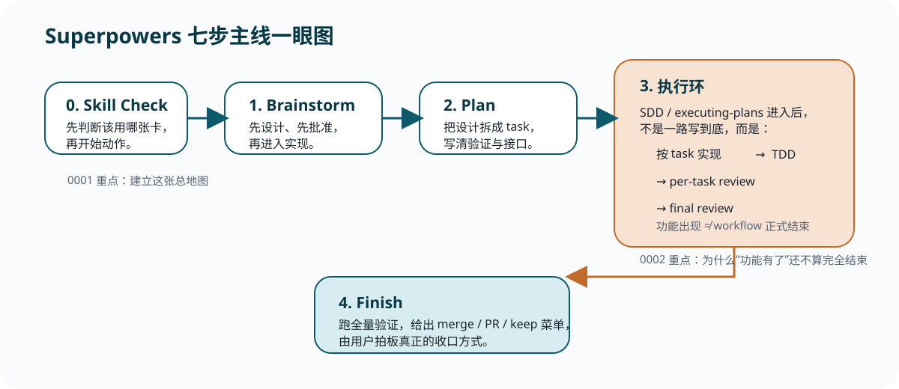

1. 先把它当成方法系统
README.md 开宗明义讲的是软件开发方法论，不是某个单一功能插件。
速查
给回看用的压缩版资料。当你忘了这个仓库到底是方法库、插件、还是工作流说明书时，先翻这一页，把主判断找回来。
README.md 开宗明义讲的是软件开发方法论，不是某个单一功能插件。
skills/ 里装的是可复用规则卡；理解仓库，最终还是要回到这些 SKILL.md。
.codex-plugin/、.claude-plugin/、.cursor-plugin/ 等目录说明同一套方法在适配多个 agent。
不先读这张卡，很容易把 Superpowers 误解成“推荐清单”，而不是“先判断 skill，再做动作”的强约束体系。
| 位置 | 角色 | 你该怎么用它 |
|---|---|---|
| README.md | 总入口 | 先用它建立项目目标、技能总览和七步工作流。 |
| skills/ | 方法卡库 | 按 skill 精读；后续课程的主体也围着这里展开。 |
| .codex-plugin/ 等 harness 目录 | 平台适配层 | 读“同一套方法如何被不同 agent 使用”，不是读业务逻辑。 |
| docs/ | 补充说明与设计沉淀 | 当 README 不够细、要看平台说明或计划背景时再下钻。 |
| tests/ | 验证层 | 提醒自己这套插件和工作流并不是只靠文案维持，还有验证约束。 |

| 阶段 | 对应 skill | 一句话理解 |
|---|---|---|
| 1 | brainstorming | 先把想法讲清楚，再谈实现。 |
| 2 | using-git-worktrees | 把实现放进隔离工作空间。 |
| 3 | writing-plans | 把设计拆成 bite-sized 任务。 |
| 4 | subagent-driven-development / executing-plans | 进入执行模式，决定谁来按计划推进任务。 |
| 5 | test-driven-development | Step 4 内每个任务的实现纪律：先红，再绿，再重构。 |
| 6 | requesting-code-review | Step 4 内每个任务完成后的检查关卡。 |
| 7 | finishing-a-development-branch | 收尾要验证、决策、清理，而不是“感觉完成”。 |
Step 4 / 5 / 6 是这七步里最容易读错的地方。
它们不是三段各走一次的直线。先走到 Step 4 进入执行模式，然后在里面循环“Step 5 用 TDD 做完一个任务 → Step 6 过 review → 下一个任务”，所有任务收束后才进入 Step 7。
using-superpowers 与 brainstorming 的中文节选。subagent-driven-development 与 test-driven-development 的中文节选。